Willkommen in der Maison Bleue
Ihre Tierklinik in Altkirch, mitten im Sundgau, 30 Minuten von Basel. Unser ganzes Team kümmert sich mit Herz um Ihre Katzen, Hunde und Nager aller Art.
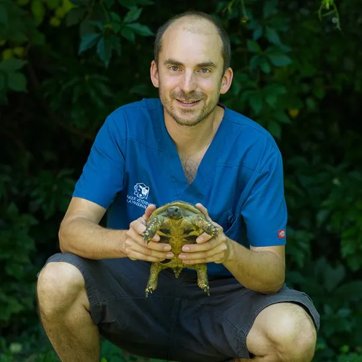
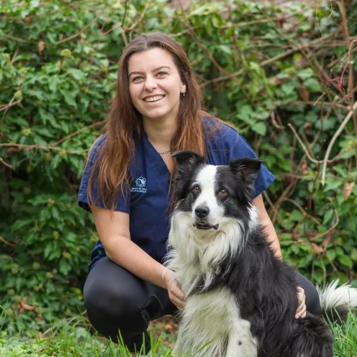
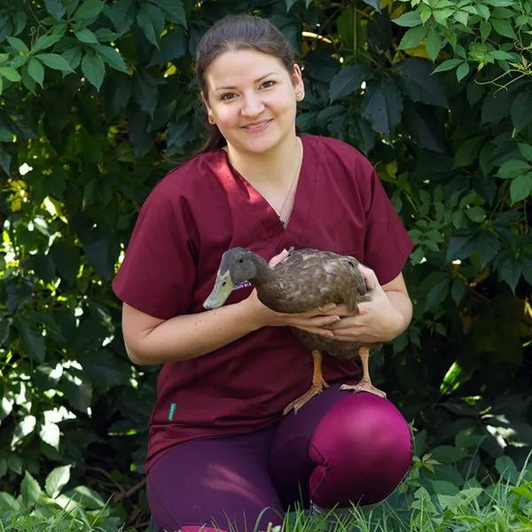
6 Tierärztinnen und Tierärzte, 6 Praxisassistentinnen
Notfälle rund um die Uhr


Renovierte Räume
Rollstuhlgerecht
Klimatisiert
Alles, was Ihr Tier braucht
Sprechstunde, Bildgebung, Chirurgie und stationäre Pflege: alles direkt vor Ort in der Klinik.
Medizin
Sprechstunden, Impfungen, Vorsorge und Begleitung Ihrer Tiere ein Leben lang.
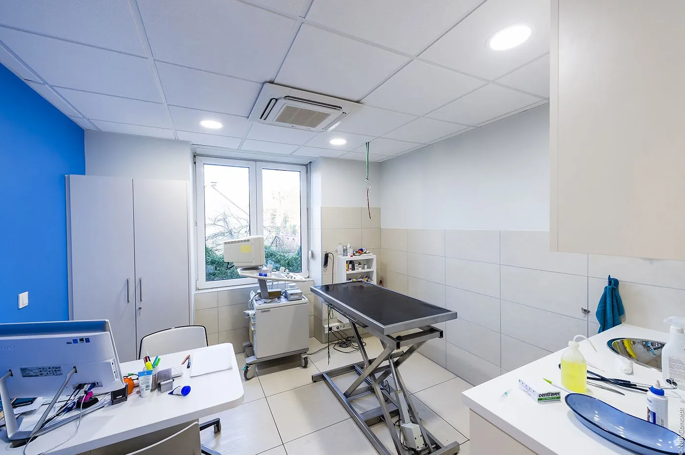
Behandlungsraum 1Chirurgie
Ein voll ausgestatteter Operationssaal für Eingriffe unter besten Bedingungen.
 Operationssaal
OperationssaalRöntgen
Ein eigener Röntgenraum für eine schnelle Diagnose.
 Röntgenraum
RöntgenraumUltraschall
Eine schonende und schmerzfreie Untersuchung für eine genauere Diagnose.
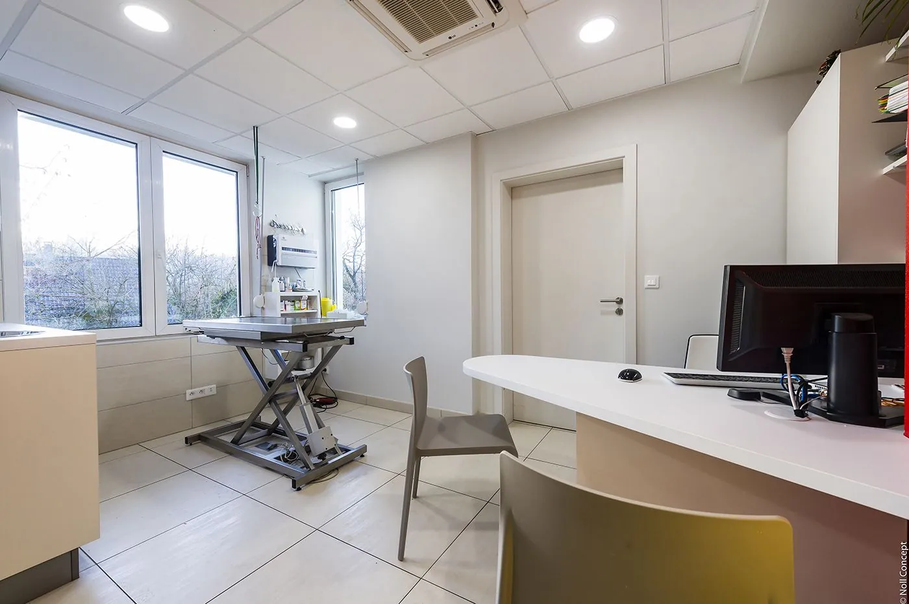
Behandlungsraum 2Stationäre Pflege
Ein Pflegebereich, um Ihre Tiere zu überwachen und zu versorgen, wenn sie bei uns bleiben müssen.
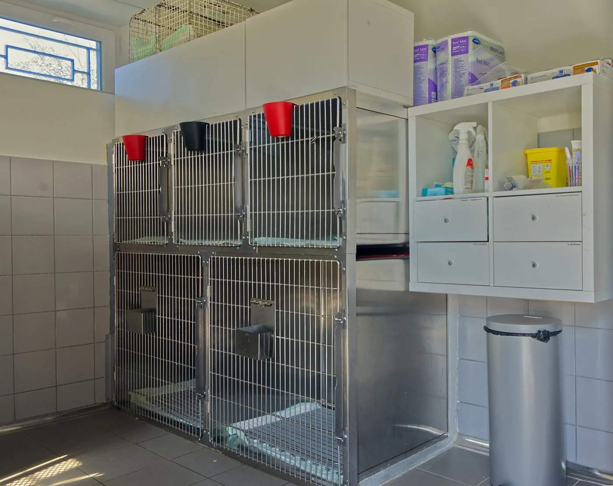
PflegebereichEigenes Labor
Analysen direkt in der Klinik – Resultate ohne Wartezeit.
 Labor
LaborFahren Sie über eine Karte oder tippen Sie darauf, um den Raum zu sehen.
Menschen (und ihre Freunde mit Fell und Federn)
Tierärztinnen, Tierärzte und Praxisassistentinnen arbeiten täglich Hand in Hand – Sie treffen immer auf ein vertrautes Gesicht.

Unsere Tierärztinnen und Tierärzte
- Mathieu GrandjeanTierarzt, Klinikleiter
 Pauline CambierTierärztin
Pauline CambierTierärztin- Jeanne KleinmannTierärztin
 Cheryl LangTierärztin
Cheryl LangTierärztin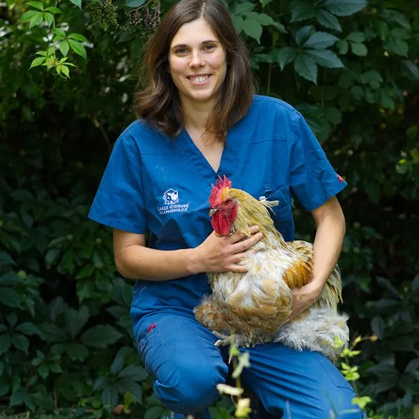
Anne-Laure PiquardTierärztin Laura TafforeauTierärztin
Laura TafforeauTierärztin
Unsere Praxisassistentinnen
- Marina BurgartTiermedizinische Praxisassistentin
 Amandine HetzlenTiermedizinische Praxisassistentin
Amandine HetzlenTiermedizinische Praxisassistentin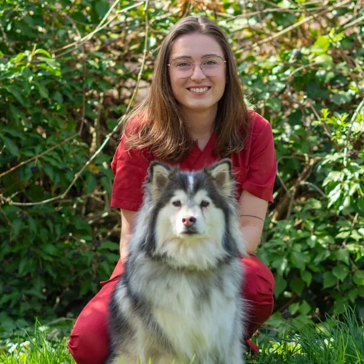
Melina HurthTiermedizinische Praxisassistentin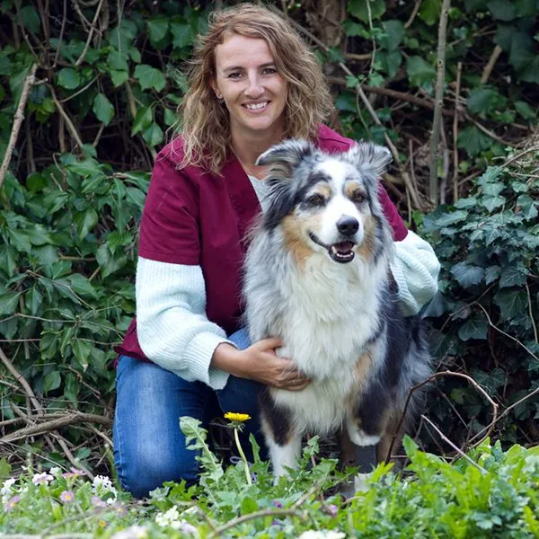
Helen LacanTiermedizinische Praxisassistentin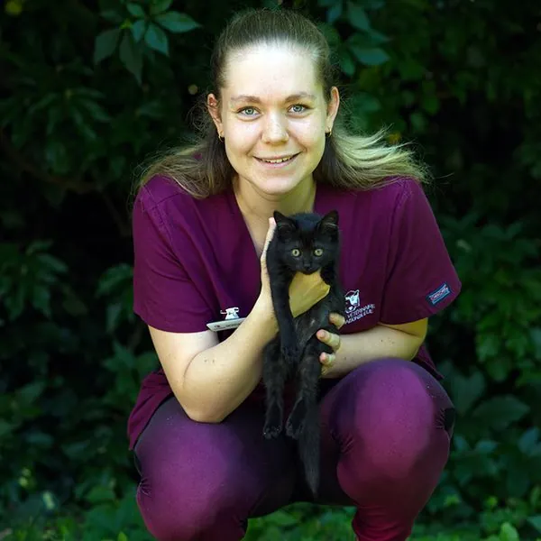
Morgane SaunerTiermedizinische Praxisassistentin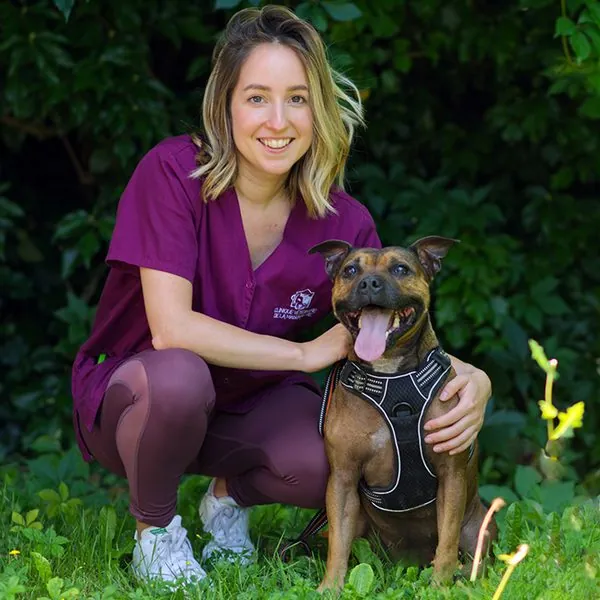
Anne-Sophie SimonTiermedizinische Praxisassistentin
Eine Geschichte, die andauert
Von der kleinen Praxis an der Rue des Bons-Enfants zum blauen Haus am Faubourg de Mulhouse.
- 1986
Eröffnung der Praxis
Mariella De Nies eröffnet ihre Praxis an der Rue des Bons-Enfants in Altkirch.
- 1992
Die Maison Bleue
Die Praxis wird zur Klinik und zieht an den Faubourg de Mulhouse.
- 2011
Partnerschaft
Mathieu Grandjean wird Partner von Mariella De Nies.
- 2016
Renovation
Grösserer Empfang, Klimaanlage und eine rollstuhlgerechte Rampe.
- 2020
Neue Generation
Mathieu Grandjean übernimmt die Nachfolge von Mariella De Nies.
Treten Sie ein, wir zeigen Ihnen alles
Häufig gestellte Fragen
Sprechstunden
Horaires
- Montag – Freitag
- 9–12 Uhr · 14–19 Uhr
- Samstag
- 9–12 Uhr
- Sonn- und Feiertage
- Notfälle
Sprechstunden nur nach Vereinbarung.
Brauche ich einen Termin?
Ja, Sprechstunden finden nur nach Vereinbarung statt: Montag bis Freitag von 9 bis 12 Uhr und von 14 bis 19 Uhr, Samstag von 9 bis 12 Uhr. Sie können online oder telefonisch buchen.
Was tun im Notfall?
Notfälle werden rund um die Uhr betreut. Rufen Sie die Klinik unter +33 3 89 40 66 06 an: Nachts und am Wochenende ist ein Bereitschaftsdienst für Sie da.
Welche Tiere behandeln Sie?
Katzen, Hunde und Nager aller Art: Unser ganzes Team geht auf ihre Bedürfnisse ein.
Ist die Klinik barrierefrei?
Ja, seit der Renovation 2016 verfügt die Klinik über eine rollstuhlgerechte Rampe und klimatisierte Räume.
Ein Notfall? Wir sind da.
Nachts, am Wochenende, an Feiertagen: Rufen Sie uns an, wir helfen Ihnen weiter.
So finden Sie uns
10 Faubourg de Mulhouse68130 Altkirch, Frankreich
+33 3 89 40 66 06
contact@clinique-maisonbleue.com Route planen